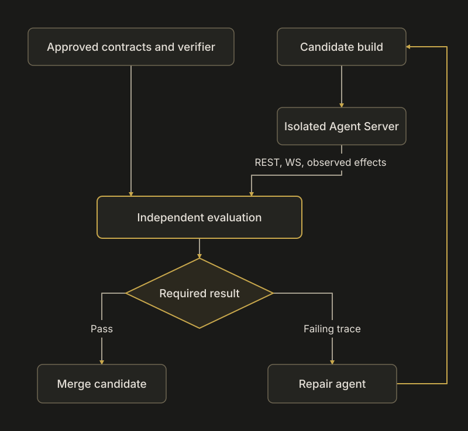

I would build this around a separately governed, executable specification of the SDK’s architecture, exercised primarily through a running Agent Server’s REST and WebSocket APIs. Agents could change implementations freely within that specification. An independent verifier would decide whether a change still conforms, and repair agents would work from concrete failing traces.
The central requirement is this:
The agent changing the implementation must not also control what counts as a successful verification.
A property test is just as editable as a unit test. A formal model can be weakened. An integration test can be skipped. Changing the testing method helps us detect different mistakes; separating authority over the specification and verdict makes those tests enforceable.
I recovered the earlier discussion about OCL-like constraints and live behavioral verification, then inspected OpenHands/software-agent-sdk at commit 69e26889401fe69157fff536e6a69049e6644cb3, the current main when I started. I also checked the current OpenHands application’s client dependency. I ran the repository’s import checker and isolated counterexamples against it. The other findings below come from source inspection; I am not presenting them as live-reproduced product defects.
1. What the repository already has—and where enforcement is weak
There is substantial useful material here. We do not need to invent a testing system from nothing.
The repository already has architectural instructions, an import-boundary checker, a check that centralizes agent construction in the launch pipeline, persisted-settings compatibility machinery, OpenAPI checks, real HTTP/WS scenarios, and TypeScript integration tests against a server image built from the candidate branch. These are good foundations. Architecture review requirements, launch architecture check, real-server scenarios, TypeScript integration workflow.
But several findings illustrate exactly the problem you are describing.
| Existing mechanism | What I found | Consequence for unattended PRs |
|---|---|---|
| Import-boundary checker | In isolated probes, it rejected import openhands.tools inside the SDK, but accepted from openhands import tools. It also describes a workspace dependency restriction without scanning that package. |
Having an architectural check does not establish that it detects the prohibited dependency. |
| Cross-package test selection | The selector includes openhands/**, while production code lives under openhands-sdk/**, openhands-agent-server/**, and the other distribution directories. |
A source-only change can skip the real cross-package scenarios while the job completes successfully. |
| REST compatibility check | It deliberately returns success when it cannot find or generate the historical baseline, unless another check has independently failed. | “Compatibility verified” and “compatibility not checked” can produce the same admission signal. |
| REST/OpenAPI policy | It explicitly excludes WebSocket/SSE compatibility and acknowledges some reliance on human review. | Part of the primary client interface remains outside that compatibility policy. |
Sources: import checker, cross-test selector, baseline handling, REST policy.
Those are limitations of the individual gates; they do not establish that every other CI check would accept the same change.
There is also an important protocol distinction. The new /sockets/session/{conversation_id} interface already has explicit durable/transient envelopes, sequence-based replay, streaming-attempt identities, and bounded writer queues. However, the current TypeScript event-stream URL builder still uses /sockets/events/{conversation_id}. A strategy that tests only the new protocol would miss the interface existing clients actually use. Session protocol, TypeScript transport.
My first investment would therefore be making existing enforcement trustworthy, then expanding what it can detect.
2. Establish an authority boundary around correctness
I would maintain an active conformance bundle containing:
- Architectural decisions and executable predicates.
- REST and WS contracts.
- Historical event/settings fixtures and supported-client versions.
- Scenario generators, comparison rules, and fault-injection controls.
- Required scenario IDs, selection rules, resource budgets, and exceptions.
- The verifier and its dependencies.
An ordinary implementation PR is evaluated against the already accepted bundle.
An agent may propose a better contract or verifier. That proposal does not become the active definition of correctness merely because its implementation PR merges.
This does not require another repository
The source can remain in this repository. The important boundary is who can activate a version of the bundle, and where it executes.
Simply using the tests from main is insufficient. Otherwise an agent could first merge a weakened test and then merge the violating implementation. The active bundle needs a separately controlled release or activation process.
Likewise, merely placing tests in architecture_tests/ or adding CODEOWNERS would not solve the problem under your assumption that people will merge without reading.
The verifier must execute independently
The candidate server should run in an isolated environment. The verifier should run elsewhere and communicate through HTTP, WebSocket, and independently observed effects.
In particular, the trusted verifier should not load the candidate’s:
conftest.pyor pytest plugins;- test-selection configuration;
- dependency environment;
- request-building and assertion helpers;
- replacement baselines or exception lists.
Candidate-generated schemas and logs are useful evidence, but the candidate does not get to supply the final verdict.

Diagram source
flowchart TD
A["Approved contracts and verifier"] --> V["Independent evaluation"]
C["Candidate build"] --> R["Isolated Agent Server"]
R -->|"REST, WS, observed effects"| V
V --> G{"Required result"}
G -->|"Pass"| M["Merge candidate"]
G -->|"Failing trace"| F["Repair agent"]
F --> C
For GitHub, I would publish the admission result through a designated GitHub App and require that identity as the expected source. GitHub supports this distinction; a check name alone is insufficient because write-capable integrations can otherwise set statuses. Organization rulesets can also require a workflow from a specified source repository, where the organization’s plan and configuration support it. [1]
The candidate environment must not contain the credential that publishes that accepted result. A trusted workflow executing candidate code with privileged credentials would destroy the separation. GitHub documents this failure mode for privileged workflows that check out and execute untrusted code. [2]
A pass must mean that verification actually happened
The verifier should generate its required scenario roster before execution. Every selected invariant needs an explicit result:
- Pass: the required behavior was exercised and satisfied.
- Fail: an observed execution violated the contract.
- Blocked/inconclusive: verification could not establish the result.
Missing baselines, unavailable dependencies, missing credentials, empty test collections, and skipped scenarios cannot become compatibility passes.
This matters because GitHub explicitly treats a skipped job as successful for merge purposes. The final admission check must validate execution evidence itself. [3]
The result should identify the tested merge revision, built artifact, active contract bundle, consumer versions, and executed scenarios. A changed PR head or changed merge base invalidates the previous result.
Ordinary implementation can remain fully automated. Changing architectural intent becomes a separate, much smaller decision surface. If that authority is delegated to agents too, their permissions and amendment rules must remain controlled; another unconstrained agent rubber-stamping changes recreates the original problem.
3. Turn architectural decisions into a small set of executable contracts
Your OCL idea fits here. I would start with the discipline of explicit invariants, preconditions, postconditions, and temporal obligations. A full OCL execution stack is optional; named Python predicates and small protocol models are a practical starting point.
Each contract should answer:
- What architectural decision are we preserving, and why?
- What observable or structural condition expresses it?
- Under which versions, backends, and execution modes does it apply?
- Which checker enforces it?
- Which valid example must pass?
- Which deliberate violation must fail?
- Who can authorize changing it?
An illustrative manifest could look like this:
id: WS-REPLAY-001
surface: /sockets/session/{conversation_id}
scope:
persistence: enabled
after_seq: explicit
requirement: >
A reconnecting client can recover the requested persisted suffix.
Transient and progress frames never advance the durable cursor.
oracle: session_replay_matches_persisted_suffix
negative_controls:
- omit_replayed_event
- advance_cursor_on_transient
- duplicate_event_at_replay_live_boundary
The named oracle must point to an actual independent checker. Merely writing the requirement in YAML and asking an LLM whether it was followed would leave the same ambiguity as prose instructions.
Initial contract portfolio
I would begin with approximately these families. They are proposed enforcement targets grounded in the repository’s existing design; some require clarification before becoming hard guarantees.
| Family | What to preserve | Strongest initial evidence |
|---|---|---|
| Package and construction boundaries | Permitted dependency directions; canonical launch construction; explicit extension points. | Static dependency analysis plus minimal-package execution. |
| Configuration and persistence | Defined settings survive create, save, restart, resume, and supported migration paths. | Historical artifacts and stateful API scenarios. |
| Durable history | Event identity and ancestry remain valid; progress does not become persisted conversation history. | Independent history inspection and restart tests. |
| Streaming and replay | Correct cursor behavior, replay/live handover, attempt supersession, and terminal reconciliation. | Generated WS histories and fault injection. |
| Run ownership | One admitted owner; stale owners cannot mutate authoritative state. | Concurrent API histories and process-level lease tests. |
| Approval and cancellation | Policy-gated effects respect confirmation; stop behavior matches the declared execution mode. | External effect witnesses and controlled in-flight operations. |
| Credentials | Authorized delivery works; unrelated responses, logs, and persistence do not expose secrets. | Synthetic secret canaries across the full lifecycle. |
| Consumer compatibility | Supported released clients continue to interpret responses and complete workflows. | Pinned client/application scenarios against the candidate server. |
| Resource bounds | Slow consumers, failed starts, and cancelled runs do not leave unbounded queues or orphaned work. | External process, connection, memory, and progress observation. |
The registry should preserve architectural meaning. It should not canonize every implementation detail or automatically declare the current code correct.
4. The testing methods I would use
A. Structural architecture testing
API behavior cannot reveal every architectural violation. Two implementations can return identical responses while one introduces a forbidden dependency or duplicates policy logic.
For those constraints, inspect the code structurally.
The existing import checker is a good starting point, once completed and qualified. It should account for all relevant packages, ordinary import forms, aliases, relative imports, and the sanctioned dynamic-loading mechanisms. New packages should require classification instead of silently falling outside the scan.
Import Linter is an option if maintaining the custom checker becomes expensive: its forbidden-import contracts include indirect dependencies. I would prototype it against this repository’s namespace-package layout before replacing the existing mechanism. [4]
I would also preserve checks around particularly valuable ownership boundaries:
- Where launch agents may be constructed.
- Where secret serialization occurs.
- Where durable events are committed and published.
- Which component owns conversation state mutation.
- Which component owns spawned work and its cleanup.
These checks need to tolerate valid refactors. Matching a particular private helper name or exact source snippet is usually weaker than checking a dependency or ownership relationship.
Then add minimal-package execution: install only the SDK and its declared dependencies in a clean environment and perform a small supported workflow. That detects accidental reliance on packages supplied by the development monorepo.
B. Published API contracts and actual consumer compatibility
Keep OpenAPI comparison, but compare against protected release artifacts. The candidate’s generated schema cannot be both the description of the change and the sole judge of its compatibility.
I would use three complementary references:
| Reference | What it tells us |
|---|---|
| Published REST/WS contract | Whether the declared public surface changed compatibly. |
| Independent behavioral predicates | Whether the server actually performs the promised operation. |
| Pinned released consumers | Whether existing clients can still use it. |
The current OpenHands application pins @openhands/typescript-client to 1.53.0. That gives an immediately concrete consumer to test against the candidate server. OpenHands package manifest at the inspected revision.
Testing only a newly generated client against a newly changed server allows both sides to agree on an incompatible change.
There is a particularly relevant policy nuance here: the SDK’s REST checker deliberately accepts some response-type widening and new discriminated-union members. It expects consumers to tolerate unknown variants. That is an explicit policy choice, but the tolerance should be exercised in the released consumer. A server accepting additional request forms and a server emitting additional response forms place different demands on an old client. Current compatibility policy.
For WebSockets, define a separate versioned contract and test both supported transports. OpenAPI validation cannot establish replay, ordering, completion, or reconnect semantics.
C. Stateful, model-based testing over real REST/WS
This would be the center of the behavioral strategy.
Build a small independent model tracking only the facts necessary to judge behavior:
- Accepted messages and whether they remain pending.
- Conversation/run lifecycle.
- Pending confirmation.
- Durable event identities and cursors.
- Streaming items and attempts.
- Effective configuration.
- Owned resources and observed effects.
Then generate sequences of API operations and compare observations with that model after each step.
Hypothesis stateful testing is suitable for generating operation sequences, carrying returned IDs into subsequent operations, checking invariants, and reducing failures to short reproducing programs. [5]
The generated sequences should include ordinary and conflicting operations: create, send, run, interrupt, reconnect, fetch history, reject, resume, fork, close, and restart.
A concrete example from this repository shows why sequence semantics matter: sending a message can return 429 after the message has already been saved. The documented recovery is to retry /run, not resend the message. A test that equates every non-success response with “nothing happened” would encode the wrong behavior and could encourage duplicate messages. Message admission contract.
The generator must also demonstrate useful reachability. A server that rejects every request should fail. A generator that never reaches execution, confirmation, replay, or takeover has not tested those invariants.
Schemathesis can complement the custom model by chaining REST operations using real response-derived resource IDs. It helps explore the schema surface; the application-specific WS and lifecycle oracles still need to be specified. [6]
D. Metamorphic testing
Here we check that a controlled transformation preserves the meaning that should remain unchanged.
This is especially useful when the output space is too large to enumerate.
| Transformation | Relation to check |
|---|---|
| Disconnect and reconnect a consumer | Recovered durable history agrees with uninterrupted consumption. |
| Drop transient token/progress frames | Final persisted content remains unchanged. |
| Change the chunk boundaries of identical provider output | Final message content and identity relationships remain correct. |
| Save, restart, and resume | Defined effective settings and subsequent restrictions are preserved. |
| Fork, then modify the fork | The parent’s history remains unchanged. |
| Interleave independent conversations in separate workspaces | Messages, cancellation, and conversation-scoped state do not cross between them. |
These relations must be grounded in the supported contract. For example, the session protocol explicitly declines to promise ordering between two open streaming items. A comparison demanding one exact total order would reject legitimate concurrency. Delivery rules.
Normalization is part of the trusted oracle. Fresh IDs can be renamed consistently, but their relationships, multiplicity, parent links, and action/observation associations must remain intact. Sorting everything or deleting inconvenient fields can conceal the defect.
Agreement between two executions is also insufficient by itself: both could be wrong. Absolute invariants and positive outcomes anchor these comparisons.
E. Fault injection, concurrency histories, and external effect observation
The difficult mistakes often occur between individually successful operations:
- Ownership changes just before a write.
- A process dies after an external effect but before its observation is persisted.
- A client reconnects while history replay overlaps live publication.
- Cancellation arrives while a tool or provider request is in flight.
- Startup fails after creating persistent resources.
- One client stops reading.
Exercise these through the actual server artifact, real sockets, real storage, and representative subprocesses.
Use controlled synchronization points instead of arbitrary sleeps. A separately controlled provider can announce that a request is in flight, withhold a response, stream partial content, fail an attempt, or acknowledge cancellation.
That provider should be an external protocol peer, leaving the SDK’s internal paths intact. It gives deterministic control over the stimulus. Separate scheduled runs against real providers then test provider compatibility and realistic agent behavior.
For effects, use something independently observable: a harmless tool operation writing to a dedicated witness, an HTTP sink, or process/resource observation outside the candidate. A returned status or candidate log saying “cancelled” is not enough.
Two present API details need care:
/interruptcan return after a bounded wait while cleanup is still running.- A subsequent
run()can implicitly approve pending actions.
Therefore, the model must distinguish interrupt requested from work stopped, and resumption from approval. Stronger quiescence and action-bound approval guarantees would require explicit design changes. Interrupt implementation, implicit confirmation.
Likewise, recovery of an event log does not prove an arbitrary external action happened exactly once. After a crash, an action’s outcome may genuinely be unknown. Tests should require honest representation of that uncertainty.
F. Architectural mutation testing: test whether the verifier can detect a violation
This is essential under your premise.
For every important contract, maintain one or more intentionally broken variants.
| Contract | Deliberate violation |
|---|---|
| Dependency direction | Introduce the forbidden dependency through different valid import forms. |
| Durable history | Omit an event or publish it before persistence. |
| Replay | Introduce an off-by-one cursor or remove replay/live deduplication. |
| Confirmation | Execute a policy-gated effect before approval or after rejection. |
| Cancellation | Change status while leaving owned work running. |
| Ownership | Remove stale-writer fencing. |
| Persistence | Drop a meaningful value during migration. |
| Secrets | Bypass the canonical serialization path. |
| Enforcement | Skip the required scenario or make the baseline unavailable. |
The original import-checker probes are a small demonstration of this method: the same prohibited relationship was detected in one form and missed in another.
A mutation counts as useful evidence only when the relevant scenario runs and fails for the intended reason. Failure to build, failure to start, or a harness crash does not demonstrate that the behavioral invariant is protected.
I would track:
Contract → representative violation → detecting observation
I would not make a global mutation percentage the architectural acceptance criterion.
For a behavioral repair, the ideal evidence is:
| Execution | Required result |
|---|---|
| Reproducer against the defective revision | Fails for the reported defect. |
| Same independently held reproducer against the repair | Passes. |
| Existing conformance bundle against the repair | Passes. |
| Relevant deliberately broken variant | Still rejected. |
New features need independently accepted requirements; their absence in an older release should not automatically be labelled a historical defect.
G. Small formal models for difficult protocols
I would use formal modeling selectively for:
- Lease acquisition, takeover, and fencing.
- Replay/live handover.
- Streaming-attempt lifecycle.
- Run termination and cancellation ownership.
TLA+ with TLC can check safety and liveness properties of the modeled state machine. Alloy also supports temporal models and bounded exploration. [7] [8]
The useful result is a precise protocol and counterexample traces that become executable server scenarios.
A checked model does not establish that the Python implementation conforms to it. Maintain that connection explicitly, and check that the model actually permits meaningful successful executions. An overconstrained model can appear correct because it excludes the problematic behavior—or all useful behavior.
I would add one narrow model after the external harness exists, so its traces have somewhere concrete to run.
5. A first worked scenario: conversation replay under disruption
If we implemented one substantial scenario first, I would choose this:
- Start the candidate server with persistence enabled.
- Create a conversation and attach a raw session-protocol consumer.
- Drive a deterministic provider through messages, tool actions, observations, and streaming output.
- Disconnect the consumer partway through execution.
- Continue producing events.
- Reconnect with the last durable cursor while further events arrive.
- After quiescence, compare the recovered suffix with authoritative persisted history and the API history view.
- Restart the server and verify that the same committed history remains available.
The assertions should include:
- Durable sequence numbers retain their event identities.
- The requested suffix is recoverable.
- The replay/live seam does not introduce missing or duplicated events.
- Progress frames do not advance the durable cursor or appear in replay.
- Retried streams do not concatenate an abandoned attempt into the final answer.
- A slow or disconnected observer does not alter the execution outcome.
- The scenario actually reached streaming, disconnection, replay, and completion.
Then vary cursor positions, history lengths, concurrent messages, provider failures, and subscriber speed.
For the legacy client transport, run its corresponding reconnect/reconciliation scenario separately. Do not impose the new session protocol’s cursor semantics on a client that does not use it.
This one family exercises architecture across storage, event identity, asynchronous publication, transport, client interpretation, and resource isolation. It remains useful across substantial internal refactors.
6. Use design patterns to reduce how many places can violate a rule
Testing becomes easier when the architecture creates a small number of enforceable boundaries.
I would strengthen these patterns where the current implementation needs them:
A canonical construction pipeline. All launch paths resolve configuration and restrictions through the same mechanism. The existing launch architecture check is already an example. Verify effective behavior through create, profile-based launch, resume, fork, and delegation paths.
A single boundary for committing and publishing durable events. Make the required ordering explicit and observable. Test crashes around it. Begin with process-crash recovery; broader storage-failure guarantees require their own assumptions and evidence.
Explicit ownership of work. A run owns its tasks, connections, and applicable subprocesses. Completion includes the specified cleanup obligation. State transitions should not free an execution slot while its previous owner still occupies it.
A canonical secret boundary. Preserve the existing serialization mechanism and test its full lifecycle. Use synthetic secrets to verify both authorized delivery and absence from unauthorized surfaces. “Secret never appears anywhere” would be the wrong assertion because intended delivery must still work.
Explicit lifecycle results. Where callers need to distinguish “request accepted” from “operation completed,” expose that distinction. An authoritative run-completion identity would be easier to reconcile than timing-based inference.
Explicit retry semantics. Use idempotency mechanisms where the operation supports them. For arbitrary external tool effects, represent uncertain outcomes instead of automatically treating a retry as safe.
These are focused architectural improvements. The objective is to concentrate obligations at boundaries while leaving agents room to refactor within them.
7. Self-healing should extend the same enforcement system
I would use scheduled agents in two roles: discovering cases the fixed corpus misses, and repairing independently demonstrated violations.
A proposed cadence:
| Cadence | Work |
|---|---|
| Every candidate | Small unconditional architecture/API core; affected compatibility scenarios; relevant negative controls. |
| Daily | Conformance against pinned current main and released artifacts; rotating stateful sequences; a few real-provider/application journeys. |
| Weekly | Longer histories, more concurrency schedules, resource-pressure cases, broader version/runtime combinations, and architecture-drift discovery. |
| On verifier changes | Requalify its required negative and positive controls before activating it. |
A daily run should not be “look around and say whether the repository seems healthy.” Give it specific obligations and require traces.
For example: verify interruption during provider streaming; reconnect during replay; resume an older stored conversation; verify confirmation through the consuming client; check that a slow observer does not stall another.
The repair loop
- Detect an observed violation. Record the contract ID, revision, artifact, configuration, seed, and relevant observations.
- Reproduce in a fresh environment. Separate a product defect from unavailable infrastructure or a harness problem.
- Minimize the trace. Reduce it to the smallest useful sequence while preserving the failure.
- Give a repair agent that reproducer. Keep the expected result under the verifier’s control.
- Evaluate the repair against the same active contract. Include affected compatibility and lifecycle scenarios.
- Retain the reproducer. Promote it into the persistent corpus through the contract process.
- Verify the resulting release or deployment. Merge success alone does not demonstrate that consumers received the fix.
The repair agent may propose a harness correction. It should not weaken the harness and use that weakened result as sole evidence for its own product repair.
Evidence also needs durable retention. This repository treats .pr/ as temporary reviewer material and removes or cleans it up; it cannot be the only store for a recurring verification system’s historical traces. Artifact policy.
Weekly architecture agents can look for duplicated policy paths, unclassified dependencies, new opaque API fields, widening exceptions, and architectural decisions without executable checks. Their discoveries should become concrete predicates or focused proposals. An LLM’s declaration that a design “looks consistent” should not certify a hard invariant.
There is practical precedent for combining mechanical architectural constraints with recurring cleanup agents: OpenAI’s engineering account describes custom dependency linters, structural checks, and background tasks that open focused refactoring PRs. That report also uses minimal merge gates in its own environment. For this public SDK, I would retain strong gates around compatibility, persistence, credentials, and execution ownership because failures propagate into downstream consumers. [9]
8. How I would roll this out
I would implement this in five bounded slices.
| Slice | Deliverable | Evidence that it is working |
|---|---|---|
| 1. Make current gates meaningful | Fix source-selection gaps; complete import checking; distinguish unavailable compatibility verification from a pass. | Source-only changes select the required scenarios; known forbidden imports are rejected; missing baselines cannot certify compatibility. |
| 2. Protect admission | Versioned active conformance bundle, independent execution, designated result publisher, exact revision/artifact binding. | An ordinary PR cannot activate weaker rules, omit required cases, or publish its own accepted verdict. |
| 3. Add the external lifecycle harness | Real-server REST/WS model covering replay, run ownership, confirmation, cancellation, restart, and secrets. | Meaningful successful states are reached; minimized failing histories are reproducible; representative violations are detected. |
| 4. Add consumer and historical compatibility | Pinned released TypeScript/OpenHands scenarios, historical conversation/settings artifacts, relevant packaged-runtime checks. | Candidate changes work for existing consumers and preserved data under the declared compatibility policy. |
| 5. Add recurring discovery and repair | Daily verification, weekly deeper exploration, retained incident corpus, bounded repair PRs. | Failures produce fresh reproductions and repairs that pass the unchanged contract. |
I would measure required-contract execution, meaningful state/transition reachability, detection of representative violations, escaped regressions, detection/repair time, and exception growth. Test counts and line coverage would not tell us whether this system is protecting the architecture.
The most valuable first step is small and concrete: repair the existing gate weaknesses, protect their active definitions, and establish the external conversation-lifecycle harness. That creates a basis on which agents can improve both the implementation and the testing strategy without being able to redefine a failure as success.
The remaining human attention belongs at the level you are pointing toward: deciding which architectural promises matter and when those promises may deliberately change. Ordinary PR correctness can increasingly be established by executable evidence, with self-healing operating under the same rules.